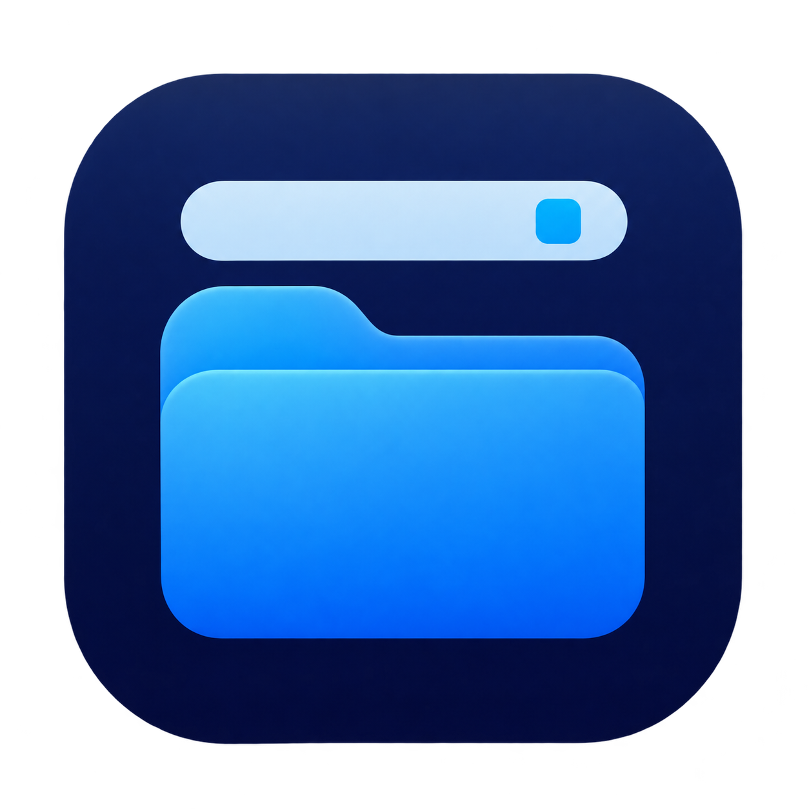

Folder In Bar 폴더인바
자주 쓰는 폴더를 메뉴 막대 가까이에 두세요. 창을 내리지 않고도 연결한 폴더의 파일을 살펴보고 기본 앱으로 열 수 있습니다.
- 바탕화면, 다운로드 등 원하는 폴더 하나를 연결합니다.
- 파일을 목록 또는 아이콘 격자로 표시합니다.
- 창의 폭과 높이를 조절하고, 원하는 보기 방식을 유지합니다.
- 로그인 시 자동 실행과 Dock 아이콘 표시를 선택할 수 있습니다.
macOS 13 이상 · 한국어 인터페이스